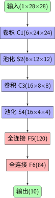
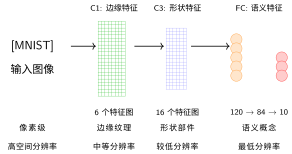

LeNet-5架构详解#
LeNet-5架构概述#
LeNet-5由Yann LeCun等人于1998年提出，是卷积神经网络发展史上的里程碑工作。
LeNet-5架构
具体参数配置：
层类型 |
输出尺寸 |
核大小/参数 |
激活函数 |
|---|---|---|---|
输入层 |
32×32×1 |
||
卷积层C1 |
28×28×6 |
5×5, 6个滤波器 |
Tanh |
池化层S2 |
14×14×6 |
2×2, 平均池化 |
|
卷积层C3 |
10×10×16 |
5×5, 16个滤波器 |
Tanh |
池化层S4 |
5×5×16 |
2×2, 平均池化 |
|
全连接层C5 |
120 |
5×5×16 → 120 |
Tanh |
全连接层F6 |
84 |
120 → 84 |
Tanh |
输出层 |
10 |
84 → 10 |
Softmax |
网络结构#
LeNet-5的经典架构包含以下层：

LeNet-5 架构
PyTorch实现#
原始LeNet-5实现#
import torch
import torch.nn as nn
import torch.nn.functional as F
class LeNet5(nn.Module):
def __init__(self, num_classes=10):
super(LeNet5, self).__init__()
# 第一个卷积块：C1 + S2
self.conv1 = nn.Conv2d(1, 6, kernel_size=5, padding=0)
self.pool1 = nn.AvgPool2d(kernel_size=2, stride=2)
# 第二个卷积块：C3 + S4
self.conv2 = nn.Conv2d(6, 16, kernel_size=5, padding=0)
self.pool2 = nn.AvgPool2d(kernel_size=2, stride=2)
# 全连接层
self.fc1 = nn.Linear(16 * 5 * 5, 120)
self.fc2 = nn.Linear(120, 84)
self.fc3 = nn.Linear(84, num_classes)
def forward(self, x):
# 输入：1x28x28
# C1：卷积层，1x28x28 -> 6x24x24
x = self.conv1(x)
x = torch.tanh(x)
# S2：平均池化，6x24x24 -> 6x12x12
x = self.pool1(x)
# C3：卷积层，6x12x12 -> 16x8x8
x = self.conv2(x)
x = torch.tanh(x)
# S4：平均池化，16x8x8 -> 16x4x4
# 注意：这里需要调整以适应MNIST的28x28输入
# 实际实现中，我们通常将输入填充到32x32
x = self.pool2(x)
# 展平
x = x.view(x.size(0), -1)
# 全连接层
x = self.fc1(x)
x = torch.tanh(x)
x = self.fc2(x)
x = torch.tanh(x)
x = self.fc3(x)
return x
适配MNIST的LeNet实现#
class LeNetMNIST(nn.Module):
def __init__(self, num_classes=10):
super(LeNetMNIST, self).__init__()
# 为适配28x28输入，我们使用padding=2将输入变为32x32
self.conv1 = nn.Conv2d(1, 6, kernel_size=5, padding=2)
self.pool1 = nn.AvgPool2d(kernel_size=2, stride=2)
self.conv2 = nn.Conv2d(6, 16, kernel_size=5, padding=0)
self.pool2 = nn.AvgPool2d(kernel_size=2, stride=2)
self.fc1 = nn.Linear(16 * 5 * 5, 120)
self.fc2 = nn.Linear(120, 84)
self.fc3 = nn.Linear(84, num_classes)
def forward(self, x):
# C1：1x28x28 -> 6x28x28 (with padding)
x = self.conv1(x)
x = torch.tanh(x)
# S2：6x28x28 -> 6x14x14
x = self.pool1(x)
# C3：6x14x14 -> 16x10x10
x = self.conv2(x)
x = torch.tanh(x)
# S4：16x10x10 -> 16x5x5
x = self.pool2(x)
# 展平
x = x.view(x.size(0), -1)
# 全连接层
x = torch.tanh(self.fc1(x))
x = torch.tanh(self.fc2(x))
x = self.fc3(x)
return x
# 模型实例化
model = LeNetMNIST()
print(f"LeNet模型总参数数量: {sum(p.numel() for p in model.parameters()):,}")
参数计算#
LeNet的参数分布：
卷积层C1： \(6 \times (5 \times 5 \times 1 + 1) = 156\) 参数
卷积层C3： \(16 \times (5 \times 5 \times 6 + 1) = 2,416\) 参数
全连接层C5： \(120 \times (16 \times 5 \times 5 + 1) = 48,120\) 参数
全连接层F6： \(84 \times (120 + 1) = 10,164\) 参数
输出层： \(10 \times (84 + 1) = 850\) 参数
总参数数量： 61,706个参数
相比全连接网络，LeNet的参数数量显著减少，但性能却大幅提升。
特征图的语义演化：从低层到高层#
卷积神经网络的一个关键特性是特征图随着网络深度的增加而变得越来越具有语义意义。让我们详细分析LeNet中各层特征图的语义内容：
低层特征（C1层）：边缘和纹理检测
在第一个卷积层（C1），6个特征图主要检测图像中的基本视觉元素：
边缘检测： 识别数字的轮廓和边界
纹理特征： 捕捉笔画的方向和粗细
对比度变化： 检测明暗交替区域
这些特征具有高度的局部性，每个特征图只关注图像的很小一部分区域（5×5感受野）。
中层特征（C3层）：形状和部件组合
在第二个卷积层（C3），16个特征图开始组合低层特征，形成更复杂的形状：
角点检测： 识别数字的拐角和交叉点
曲线特征： 检测数字的弯曲部分（如数字"3"的曲线）
直线组合： 识别数字的直线段及其组合
这一层的感受野扩大到了14×14，能够捕捉数字的局部结构模式。
高层特征（全连接层）：语义概念
全连接层（C5和F6）将中层特征进一步抽象为高级语义概念：
数字部件组合： 识别完整的数字形状特征
类别特异性： 区分不同数字的独特特征
不变性表示： 对位置、大小、旋转具有一定的不变性
语义演化的数学解释
特征图的语义演化可以通过特征复杂度来量化：
随着网络深度增加：
低层：高空间分辨率，低语义复杂度
中层：中等空间分辨率，中等语义复杂度
高层：低空间分辨率，高语义复杂度
为什么这种分层特征提取有效？
这种从低层到高层的语义演化之所以有效，是因为：
层次化组合： 复杂特征可以由简单特征层次化组合而成
参数效率： 共享的低层特征可以被重复使用
泛化能力： 学习通用特征而不是记忆特定样本
生物学启发： 类似于人类视觉系统的信息处理机制，先局部后整体

LeNet中特征图的语义演化过程
这种从具体到抽象、从局部到整体的特征演化过程，使得卷积神经网络能够有效地理解图像内容，并在MNIST等视觉任务上取得优异的性能。
贡献者与修订历史
查看详细修订记录
-
cec393d2025-12-11 - Heyan Zhu: docs: partially complete migration and restructure course materials